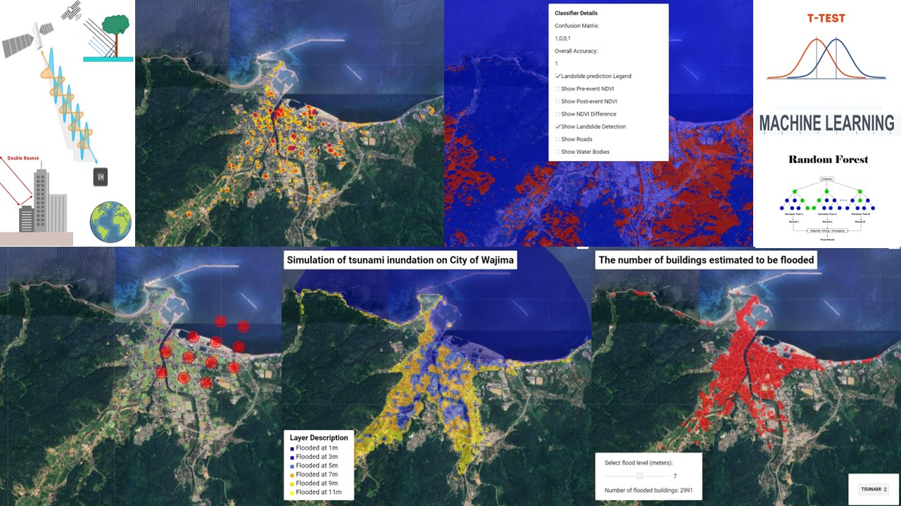
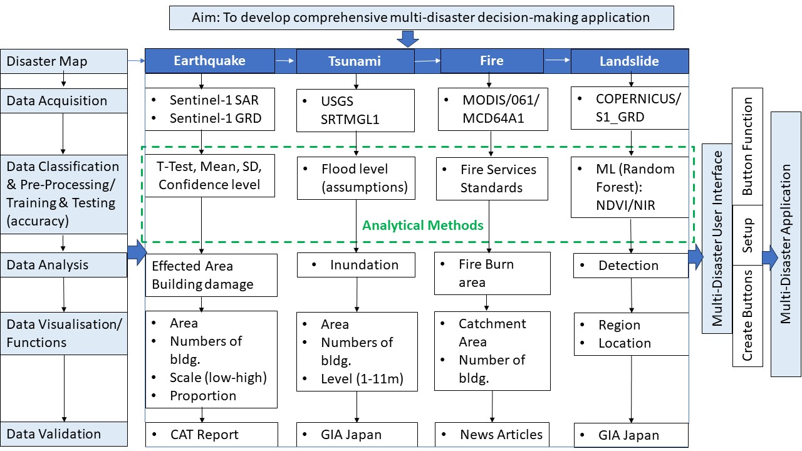
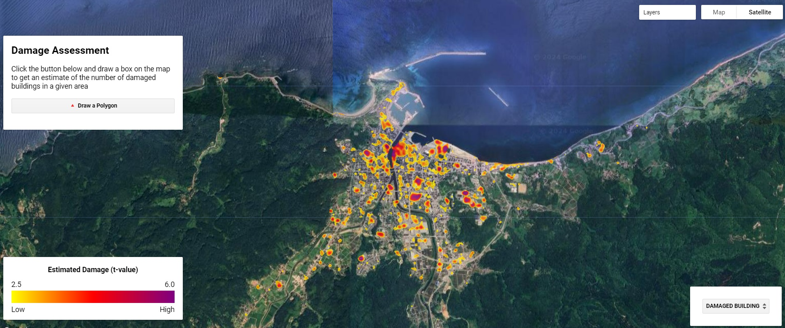
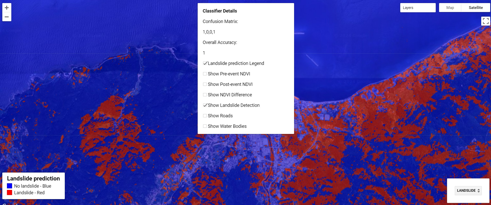
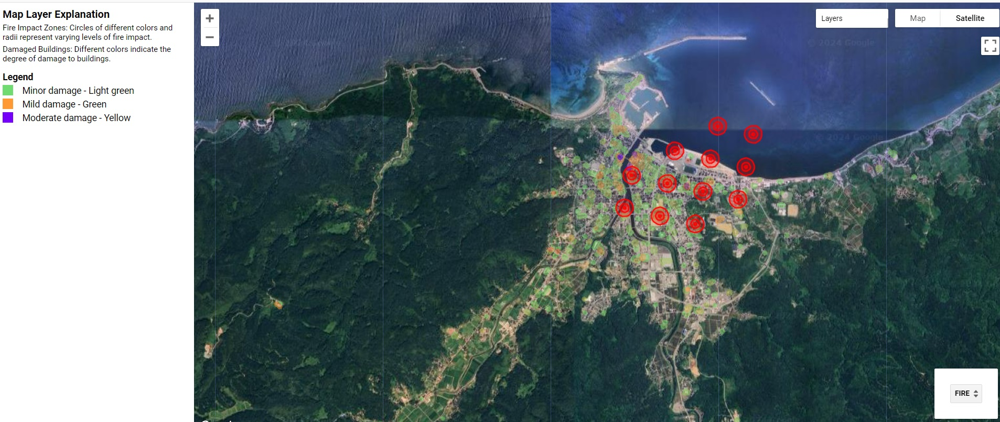
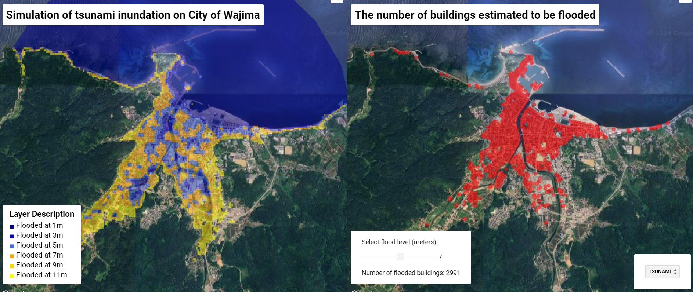
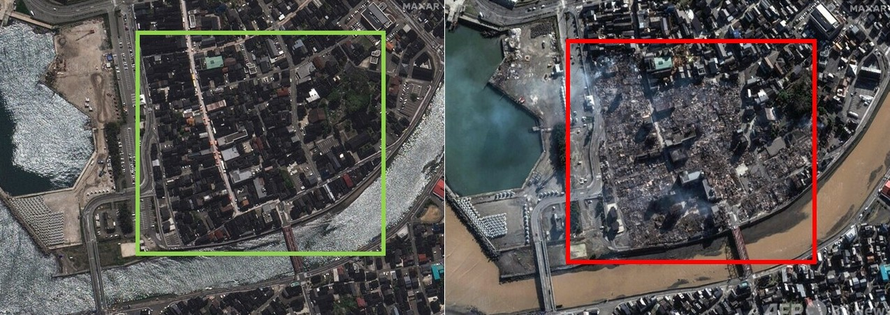

CASA00025 : Comprehensive Multi-Disaster Application
Project Summary
Spatial events are complex and often entail chain reactions. Moreover, severe ripple effects can be observed, especially during disasters in densely populated urban areas. It becomes imperative to understand such disaster events collectively to comprehend the domino effect and its implications. Thus, the project aims to create an application to assess multiple disaster events.

Problem Statement
With increasing anthropological interference with nature and non-environmentally friendly development, the risk of disasters across the globe is on the rise. The present body of knowledge witnesses that disaster events are often studied in silos. However, recent evidence from Japan shows that more than one disaster can occur simultaneously, such as earthquakes, tsunamis, fires, and landslides. On January 1st, 2024, an earthquake with a magnitude of 7.5 hit the Noto Peninsula, Japan, resulting in an estimated 10,000 buildings damaged or destroyed. The extent and intensity of the disaster in the Noto Peninsula, which consists of 300-400 meter mountains and elevations, presents varying geographic conditions, embedding a multi-nature of land-forms and its events, making it difficult to assess the multi-disaster occurrence together or as a chain of activities. In order to identify the overlapping extent and intensity of the multiple-disaster impact, the attempted application seeks to estimate spatial and physical implications using satellite imagery. Therefore, a multi-disaster map layer could provide the extent of spatial severity and impact to assess various areas and building-level and area-level measures. Thus, the complex urban system requires a comprehensive assessment tool.
End User
Various stakeholders have been identified who can benefit from the application. The Japan Ministry of Disaster Management is one such stakeholder that could use the application to assess the typology of disasters, whether individually or comprehensively. Understanding the disasters holistically, the housing department may utilize the application to carry out suitable building retrofitting or renovation. Additionally, appropriate beneficiary schemes may use the application to provide compensation. Furthermore, the Ministry of Land, Infrastructure, Transport, and Tourism could further analyze the epicenter from individual disaster and combined disaster event scenarios. Thus, Ishikawa Prefecture (Local Authority) and reconstruction agencies are also relevant stakeholders. Studies, research, and reports on building investigation (e.g., material and years), level of damage could be conducted, aiding in policy interventions such as the review of the Building Standards Act. Beneficiary schemes (e.g., compensation) or reconstruction for Future Urban Planning, as well as for immediate rescue and search bots, may also benefit from the application.
Data
Data-driven assessment and decision-making application could provide ease of interaction for users to understand and action upon. In order to handle ginormous datasets to plan and manage complex spatial phenomena for above identified stakeholders could be enabled by create a user interface to disseminate information and knowledge. Thus, Sentinel-1 Synthetic Aperture Radar (SAR) imagery, Sentinel-1 GRD imagery for earthquake, USGS SRTMGL1 imagery for Tsunami, MODIS/061/MCD64A1 for fire and COPERNICUS/S1_GRD for landslide satellite data are significant to the study.
Methodology and Methods
A robust methodology has been employed to achieve the aim of designing an application to assess the impact of multiple disaster events in a given spatial location in Japan. The first objective involves designing maps for individual disasters, such as earthquakes, tsunamis, fires, and landslides. Subsequently, the multi-disaster map depicts the intensity of disasters in terms of the number of events affecting the same building or area. This exercise aims to design an application to assess the impact of multiple disaster events in a given spatial location of the City of Wajima. The present design of the application attempts to achieve the following objectives:
- To understand the intensity of the disaster in terms of the number/ level of disasters impacting building damage or spatial vulnerability.
- Finally, to develop a user interface application for the ease of information access and knowledge dissemination to stakeholders.
The various methods used are machine learning (ML) using Random Forest, NDVI/NIR, confusion matrix, T-Test, mean, standard deviation, confidence level, assumptions, standards. In addition, these objectives facilitate the development of an application for easy of access to information and dissemination of knowledge to users whose methodology is as below.

Interface
Creating a user-friendly interactive platform, the multi-disaster application offers several advantages. The present application categorizes into sequential disaster maps of earthquakes, landslides, fires, and tsunamis, each equipped with layers, panels, buttons, sliders, etc., for user interaction. The earthquake map provides building damage visualization, allowing users to draw polygons to calculate the number of damaged buildings and shows damage assessment using a low-to-high scale based on t-test results. The landslide map visualizes occurrences of landslides and allows users to assess intensity by toggling between options such as pre-event, post-event, landslide detection, road, water bodies using the confusion matrix, and accuracy algorithm. Similarly, the fire disaster map illustrates the catchment area from the fire source, with layers based on brightness and surface temperature change for further interaction. Lastly, the tsunami disaster map displays building damage and flood level implications, allowing users to adjust the flood level slider to identify inundated buildings and area. Overall, the designed interface offers multi-disaster maps with various options for user interaction to assess location, building damage count, risk levels, pre-event/post-event scenarios, buffer zones, catchment areas, and more.Therefore, the outputs could be utilized by the user, i.e., identified stakeholders, to undertake building reconstruction, retrofitting, policy interventions, disaster mitigation, and management.
The Application
The following link to application is as below.
How it Works
Earthquake (damaged building)
The provided JavaScript code defines a function ‘ttest’ for performing a t-test analysis on Sentinel-1 Synthetic Aperture Radar (SAR) imagery. The function takes inputs such as the image collection ‘s1’, shock date, pre-event and post-event intervals, and calculates the t-value representing the magnitude of change between the two periods. It computes the mean and standard deviation for both the pre-event and post-event periods, then calculates the pooled standard deviation and the denominator of the t-test formula. Finally, it returns the absolute value of the change, which indicates the significance of the difference between the two periods.
Additionally, there is another function ‘filter_s1’ that filters Sentinel-1 GRD (Ground Range Detected) imagery based on specified parameters such as orbit path, polarization, and date range. It aggregates the relative orbit numbers, then maps over each orbit to filter the image collection accordingly. Within this function, the ‘ttest’ function is applied to both VV and VH polarizations separately, and the resulting t-values are combined to form a mean t-value image. This allows for the analysis of change detection in SAR imagery over a specified time period and orbit path.
-- ///
// Set functions //
// Define a t-test function
function ttest(s1, shock, pre_interval, post_interval) {
// Convert the shock date to a date object
var shock = ee.Date(shock);
// Filter the image collection to the pre-event period
var pre = s1.filterDate(
shock.advance(ee.Number(pre_interval).multiply(-1), "month"),
shock
);
// Filter the image collection to the post-event period
var post = s1.filterDate(shock, shock.advance(post_interval, "month"));
// Calculate the mean, standard deviation, and number of images for the pre-event period
var pre_mean = pre.mean();
var pre_sd = pre.reduce(ee.Reducer.stdDev());
var pre_n = ee.Number(pre.aggregate_array('orbitNumber_start').distinct().size());
// Calculate the mean, standard deviation, and number of images for the pre-event period
var post_mean = post.mean();
var post_sd = post.reduce(ee.Reducer.stdDev());
var post_n = ee.Number(post.aggregate_array('orbitNumber_start').distinct().size());
// Calculate the pooled standard deviation
var pooled_sd = pre_sd
.multiply(pre_sd)
.multiply(pre_n.subtract(1))
.add(post_sd.multiply(post_sd).multiply(post_n.subtract(1)))
.divide(pre_n.add(post_n).subtract(2))
.sqrt();
// Calculate the denominator of the t-test
var denom = pooled_sd.multiply(
ee.Number(1).divide(pre_n).add(ee.Number(1).divide(post_n)).sqrt()
);
// Calculate the Degrees of Freedom, which is the number of observations minus 2
var df = pre_n.add(post_n).subtract(2);
var change = post_mean
.abs()
.subtract(pre_mean)
.divide(denom)
.abs() //returning abs, so as t-value is bigger, the change becomes bigger.
//.subtract(2);
// return the t-values for each pixel
return change
}
// Define a satelite image after t-test
function filter_s1(path) {
// Filter the image collection to the ascending or descending orbit
var orbits = ee
.ImageCollection("COPERNICUS/S1_GRD_FLOAT")
.filter(ee.Filter.listContains("transmitterReceiverPolarisation", "VH"))
.filter(ee.Filter.eq("instrumentMode", "IW"))
.filter(ee.Filter.eq("orbitProperties_pass", path))
.filterBounds(aoi)
.filterDate('2023-01-01','2024-04-15')
.aggregate_array('relativeOrbitNumber_start')
.distinct()
print(orbits)
var image_col=ee.ImageCollection(orbits.map(function(orbit){
var s1 = ee
.ImageCollection("COPERNICUS/S1_GRD_FLOAT")
.filter(ee.Filter.listContains("transmitterReceiverPolarisation", "VH"))
.filter(ee.Filter.eq("instrumentMode", "IW"))
.filter(ee.Filter.eq("relativeOrbitNumber_start",orbit))
// Calculate the t-test for the filtered image collection using the function we defined earlier
var vv = ttest(s1.select("VV"), "2024-01-01", 12, 4)
var vh = ttest(s1.select("VH"), '2024-01-01', 12, 4)
var vv= vv.rename('change');
var vh= vh.rename('change');
// Return the t-values for each pixel
var image=ee.ImageCollection([vv,vh]).mean()
return image
})).mean()
return image_col
}
// Set a dates //
var start = "2023-01-01";
var now = Date.now();
//var now='2024-03-31'
var end = ee.Date(now).format();
// Set an interface //
// Create a Draw a Polygon botton
var drawButton = ui.Button({
label: "🔺" + " Draw a Polygon",
onClick: drawPolygon,
style: { stretch: "horizontal" },
});
// Create a Damage Assesment panel
var footagePanel = ui.Panel({
widgets: [
ui.Label("Damage Assessment", {
fontWeight: "bold",
fontSize: "20px",
}),
ui.Label(
"Click the button below and draw a box on the map to get an estimate of the number of damaged buildings in a given area",
{ whiteSpace: "wrap" }
),
drawButton,
ui.Label(),
],
style: { position: "top-left", maxWidth: "350px", maxHeight:'90%'},
layout: ui.Panel.Layout.flow("vertical", true),
});
// Define a color scale function
function makeColorBarParams(palette) {
return {
bbox: [0, 0, 1, 0.1],
dimensions: "100x10",
format: "png",
min: 0,
max: 1,
palette: palette.reverse(),
};
}
var reds = ["yellow", "red", "purple"];
// Create the color bar
var colorBar = ui.Thumbnail({
image: ee.Image.pixelLonLat().select(0),
params: makeColorBarParams(reds.reverse()),
style: { stretch: "horizontal", margin: "0px 8px", maxHeight: "24px" },
});
// Create the title for the color bar
var legendTitle = ui.Label({
value: "Estimated Damage (t-value)",
style: { fontWeight: "bold" ,textAlign: "center",stretch: "horizontal"},
});
// Create the panel for the color bar
var legendLabels = ui.Panel({
widgets: [
ui.Label('Low', { margin: "4px 8px" }),
ui.Label( " ", {
margin: "4px 8px",
textAlign: "center",
stretch: "horizontal",
}),
ui.Label('High', { margin: "4px 8px" }),
],
layout: ui.Panel.Layout.flow("horizontal"),
});
// Create the scale
var scalePanel = ui.Panel({
widgets: [
ui.Label('2.5', { margin: "4px 8px" }),
ui.Label( " ", {
margin: "4px 8px",
textAlign: "center",
stretch: "horizontal",
}),
ui.Label('6.0', { margin: "4px 8px" }),
],
layout: ui.Panel.Layout.flow("horizontal"),
});
// Set the panel
var legendPanel = ui.Panel({
widgets: [legendTitle, scalePanel, colorBar, legendLabels],
style: { position: "bottom-left", Width: "350px"},
});
// Apply for a Japan case //
// Create mapPanel_building
var mapPanel_building = ui.Map();
mapPanel_building.setOptions('SATELLITE');
// Show mapPanel_building
ui.root.widgets().set(0, mapPanel_building);
// Define a function for returning an image of damaged buildings
function footprints(cutoff, aoi, label) {
var footprints = ee.FeatureCollection('projects/ee-rengeanzu/assets/location-points-to-polygonss')
.filterBounds(aoi)
.map(function(feat) {
return feat.set('area', feat.geometry().area(10)).set('geometry_type', feat.geometry().type());
})
.filter(ee.Filter.gt('area', 50)); //remove under 50 m2 buildings
var mean = image.reduceRegions({
collection: footprints,
reducer: ee.Reducer.mean(),
scale: 10
});
var damaged = mean.filter(ee.Filter.gt('mean', cutoff))
print(damaged.size())
var totalCount = mean.size()
var damagedCount = damaged.size()
var proportion = ((damagedCount.divide(totalCount)).multiply(100)).int() // .evaluate(function(val){return val});
var outlines = ui.Map.Layer(damaged, {
color: 'red'
}, 'footprints');
mapPanel_building.layers().set(0, outlines)
mapPanel_building.layers().get(0).setShown(true)
mapPanel_building.layers().get(1).setShown(false)
}
// Define "change" layer
function clear() {
// Define a clear map
mapPanel_building.clear()
mapPanel_building.setOptions('SATELLITE')
mapPanel_building.setControlVisibility({
all: false
});
mapPanel_building.setControlVisibility({
layerList: true,
mapTypeControl: true
});
var urban = ee.ImageCollection('GOOGLE/DYNAMICWORLD/V1').filterDate('2023-01-01', '2024-04-15').mean().select('built')
var boxcar = ee.Kernel.gaussian({
radius: 50,
units: 'meters',
normalize: true,
sigma: 20
});
// Call the filter_s1 function once for each orbit, and then combine the two images into a single image
var asc = filter_s1("ASCENDING")
var desc = filter_s1("DESCENDING")
var image = ee
.ImageCollection([asc, desc]).mean().convolve(boxcar)
.updateMask(urban.gt(0.3))
// Add the composite to the map
var reds = ["yellow", "red", "purple"];
// Add the composite to the map
var damage_layer = ui.Map.Layer(
image.updateMask(image.gt(2.5)), {
min: 2.5,
max: 6,
opacity: 0.8,
palette: reds
},
"change"
);
mapPanel_building.layers().set(0, damage_layer)
mapPanel_building.style().set("cursor", "crosshair");
mapPanel_building.centerObject(initialPoint, 14);
mapPanel_building.add(legendPanel);
return image
}
// Define a function to clear map and add a Damage Assesment panel
function home() {
var image = clear()
mapPanel_building.add(footagePanel)
return image
}
// Define a Draw a Polygon button
var drawingTools = mapPanel_building.drawingTools();
drawingTools.setShown(false);
while (drawingTools.layers().length() > 0) {
var layer = drawingTools.layers().get(0);
drawingTools.layers().remove(layer);
}
var dummyGeometry = ui.Map.GeometryLayer({
geometries: null,
name: "geometry",
color: "23cba7",
}).setShown(false);
drawingTools.layers().add(dummyGeometry)
function clearGeometry() {
var layers = drawingTools.layers();
layers.get(0).geometries().remove(layers.get(0).geometries().get(0));
}
function drawPolygon() {
clearGeometry();
drawingTools.setShape("rectangle");
drawingTools.draw();
}
function drawPoint() {
clearGeometry();
drawingTools.setShape("point");
//var pointBuffer = point.buffer({'distance': 100});
drawingTools.draw();
}
// Run a footprints function
function footprints() {
var aoi = drawingTools.layers().get(0).getEeObject();
drawingTools.layers().get(0).setShown(false);
var footprints = ee.FeatureCollection('projects/ee-rengeanzu/assets/location-points-to-polygons')
.filterBounds(aoi)
.map(function(feat) {
return feat.set('area', feat.geometry().area(10)).set('geometry_type', feat.geometry().type());
})
.filter(ee.Filter.gt('area', 50))
.filter(ee.Filter.equals('geometry_type', 'Polygon'));
var mean = image.reduceRegions({
collection: footprints,
reducer: ee.Reducer.mean(),
scale: 10
});
var damaged = mean.filter(ee.Filter.gt('mean', 1.96)) //95% confidence period
var totalCount = mean.size()
var damagedCount = damaged.size()
var proportion = ((damagedCount.divide(totalCount)).multiply(100)).int() // .evaluate(function(val){return val});
var sumLabel2 = ui.Label({
value: 'Calculating...'
})
var meanLabel2 = ui.Label({
value: 'Calculating...'
})
damagedCount.evaluate(function(val) {
sumLabel2.setValue(val)
});
proportion.evaluate(function(val) {
meanLabel2.setValue(val)
});
var sumLabel1 = ui.Label("Number of damaged buildings in the area: ")
var meanLabel1 = ui.Label("Proportion (%): ")
var sumPanel = ui.Panel({
layout: ui.Panel.Layout.flow('horizontal'),
widgets: [sumLabel1, sumLabel2]
})
var meanPanel = ui.Panel({
layout: ui.Panel.Layout.flow('horizontal'),
widgets: [meanLabel1, meanLabel2]
})
var statsPanel = ui.Panel([sumPanel, meanPanel])
footagePanel.widgets().set(4, statsPanel);
Export.table.toDrive({
collection: damaged,
description: '_damaged_buildings',
});
Export.image.toDrive({
image: image.clip(aoi),
scale: 10,
description: '_damage',
});
var outlines = ui.Map.Layer(damaged, {
color: 'red'
}, 'footprints');
mapPanel_building.layers().set(1, outlines)
mapPanel_building.layers().get(0).setShown(false)
}
var image = home()
drawingTools.onDraw(footprints);
mapPanel_building.add(buttonPanel);
and math: \[ \Large t = {\frac{\overline{x_1}-\overline{x_2}} {\sqrt{\frac{s^2_1}{n_1} + \frac{s^2_2}{n_2}}}} \]
Landslide
The code snippet provides a landslide detection visualization tool using Sentinel-1 GRD imagery. It calculates the mean difference between pre and post-event periods, applying a threshold to create a mask highlighting areas of significant change. The masked layer, showing the difference more clearly, is overlaid on the map along with the original landslide detection layer, enabling users to visualize and assess potential landslide areas effectively.
To enhance the analysis, additional features such as building footprints or vegetation indices like NDVI/NIR could be integrated. Clipping the analysis to land areas using multipoint geometry could provide more accurate results. Adjusting the threshold for the mask can improve the display by focusing on areas with substantial changes, aiding in the identification and assessment of landslide risks. Users can interact with the map interface to explore different layers and adjust parameters for more comprehensive landslide detection and visualization.
// Set up the Area of Interest (AOI)
var point = ee.Geometry.Point([136.89961, 37.39405]); // Center point
var aoi = point.buffer(10000); // 10 km buffer around the point
// Define the time range for pre- and post-event analysis
var preStart = '2023-08-01';
var preEnd = '2023-12-31';
var postStart = '2024-01-02';
var postEnd = '2024-03-31';
// Load the Sentinel-2 Image Collection within the specified dates and area
var s2 = ee.ImageCollection('COPERNICUS/S2')
.filterBounds(aoi)
.filterDate(preStart, postEnd)
.filter(ee.Filter.lt('CLOUDY_PIXEL_PERCENTAGE', 10));
// Function to calculate NDVI
function addNDVI(image) {
var ndvi = image.normalizedDifference(['B8', 'B4']).rename('NDVI');
return image.addBands(ndvi);
}
// Apply the NDVI function to each image in the collection
var ndviCollection = s2.map(addNDVI);
// Compute median NDVI images for pre and post periods
var preNDVI = ndviCollection.filterDate(preStart, preEnd).median().select('NDVI');
var postNDVI = ndviCollection.filterDate(postStart, postEnd).median().select('NDVI');
// Calculate NDVI difference to highlight changes
var ndviDiff = postNDVI.subtract(preNDVI).rename('NDVI_Diff');
// Calculate NDVI difference
var ndviDifference = postNDVI.subtract(preNDVI);
// Sampling points for training
// Assume points are pre-classified as 1 (landslide) or 0 (no landslide)
var points = ee.FeatureCollection([
ee.Feature(ee.Geometry.Point([137.1018965847964,37.45891870504624]), {label: 1}),
ee.Feature(ee.Geometry.Point([136.8232291924816,37.34724623299005]), {label: 0})
]);
// Overlay the points on the NDVI difference to extract training data
var training = ndviDifference.sampleRegions({
collection: points,
properties: ['label'],
scale: 10
});
// Train a Random Forest classifier
var classifier = ee.Classifier.smileRandomForest(50).train({
features: training,
classProperty: 'label',
inputProperties: ['NDVI']
});
// Apply the classifier to the NDVI difference image
var classified = ndviDifference.classify(classifier);
// Visualize clusters
// Load and filter additional datasets for roads and water bodies
var roads = ee.FeatureCollection('TIGER/2016/Roads').filterBounds(aoi);
var waterBodies = ee.FeatureCollection('HYCOM/sea_water_velocity');
//var buildings = ee.FeatureCollection('GlobalHumanSettlementLayer/GHS_BUILT_LDSMT_GLOBE_V1').filterBounds(aoi);
// Visualization parameters
var visParams = {
bands: ['NDVI_Diff'],
min: -0.5,
max: 0.5,
palette: ['blue', 'white', 'red']
};
var roadParams = {
color: 'yellow',
width: 1
};
var waterParams = {
color: 'blue',
width: 1
};
//var clusterVis = {min: 0, max: 2, palette: ['cyan', 'orange', 'purple']};
// Adding layers to the Map
// Create a map layer control panel.
var panel = ui.Panel({style: {width: '300px'}});
var mapPanel_landslide = ui.Map();
mapPanel_landslide.centerObject(initialPoint, 14);
mapPanel_landslide.setOptions("SATELLITE");
// Add layers to the map.
mapPanel_landslide.add(ui.Map.Layer(preNDVI.select('NDVI'), {min: -1, max: 1, palette: ['blue', 'white', 'green']}, 'Pre-event NDVI', false));
mapPanel_landslide.add(ui.Map.Layer(postNDVI.select('NDVI'), {min: -1, max: 1, palette: ['blue', 'white', 'green']}, 'Post-event NDVI', false));
mapPanel_landslide.add(ui.Map.Layer(ndviDiff, visParams, 'NDVI Difference', false));
mapPanel_landslide.add(ui.Map.Layer(classified, {min: 0, max: 1, palette: ['blue', 'red'], opacity: 0.5}, 'Landslide Prediction', true));
mapPanel_landslide.add(ui.Map.Layer(roads.style(roadParams), {}, 'Roads', false));
mapPanel_landslide.add(ui.Map.Layer(waterBodies.style(waterParams), {}, 'Water Bodies', false));
// Create checkbox widgets for layer visibility.
var checkbox1 = ui.Checkbox('Show Pre-event NDVI', false, function(checked) {
mapPanel_landslide.layers().get(0).setShown(checked);
});
var checkbox2 = ui.Checkbox('Show Post-event NDVI', false, function(checked) {
mapPanel_landslide.layers().get(1).setShown(checked);
});
var checkbox3 = ui.Checkbox('Show NDVI Difference', false, function(checked) {
mapPanel_landslide.layers().get(2).setShown(checked);
});
var checkbox4 = ui.Checkbox('Show Landslide Detection', true, function(checked) {
mapPanel_landslide.layers().get(3).setShown(checked);
});
var checkbox5 = ui.Checkbox('Show Roads', false, function(checked) {
mapPanel_landslide.layers().get(4).setShown(checked);
});
var checkbox6 = ui.Checkbox('Show Water Bodies', false, function(checked) {
mapPanel_landslide.layers().get(5).setShown(checked);
});
var title = ui.Label('Classifier Details', {fontWeight: 'bold'});
panel.add(title);
var validation = classified.sampleRegions({
collection: points,
properties: ['label'],
scale: 10,
});
var confusionMatrix = validation.errorMatrix('label', 'classification');
// Add confusion matrix and accuracy to the panel
var matrixLabel = ui.Label('Confusion Matrix:');
var matrixValue = ui.Label(confusionMatrix.array().getInfo());
panel.add(matrixLabel);
panel.add(matrixValue);
var accuracyLabel = ui.Label('Overall Accuracy:');
var accuracyValue = ui.Label(confusionMatrix.accuracy().getInfo());
panel.add(accuracyLabel);
panel.add(accuracyValue);
// Function to create and style the legend
function createLegend() {
var legend = ui.Panel({
style: {
position: 'bottom-left',
padding: '8px 15px'
}
});
// Create legend title
var legendTitle = ui.Label({
value: 'Landslide prediction',
style: {
fontWeight: 'bold',
fontSize: '18px',
margin: '0 0 4px 0',
padding: '0'
}
});
// Add the title to the legend
legend.add(legendTitle);
// Set legend keys and descriptions
var names = ['No landslide - Blue', 'Landslide - Red'];
var colors = ['blue', 'red']; // These should match 'palette' in visParams
// Add color boxes and labels to the legend
for (var i = 0; i < names.length; i++) {
var colorBox = ui.Label({
style: {
backgroundColor: colors[i],
// Make sure the color box is square
padding: '8px',
margin: '0 0 4px 0'
}
});
var description = ui.Label({
value: names[i],
style: {margin: '0 0 4px 6px'}
});
// Make a horizontal panel to hold the color box and description
var colorPanel = ui.Panel({
widgets: [colorBox, description],
layout: ui.Panel.Layout.Flow('horizontal')
});
// Add the color panel to the legend
legend.add(colorPanel);
}
return legend;
}
// Create the legend
var legend = createLegend();
// Create a checkbox to toggle the legend's visibility
var checkbox = ui.Checkbox('Landslide prediction Legend', true, function(checked) {
// Show or hide the legend based on the checkbox
legend.style().set('shown', checked);
});
// Add the checkbox and the legend to the UI
panel.add(checkbox);
mapPanel_landslide.add(legend);
// Add the widgets to the panel and add the panel to the map.
panel.add(checkbox1);
panel.add(checkbox2);
panel.add(checkbox3);
panel.add(checkbox4);
panel.add(checkbox5);
panel.add(checkbox6);
mapPanel_landslide.add(panel);
// Add the map to the UI.
//ui.root.add(map);
Fire
The code snippet creates a fire burn area visualization tool in Earth Engine’s JavaScript API. It allows users to select different fire datasets and years using dropdown menus and sliders, respectively. Upon selection, the map dynamically updates to display the burned areas for the chosen dataset and year, aiding in the assessment and monitoring of fire impacts over time and across different datasets.
var mapPanel_fire = ui.Map();
mapPanel_fire.centerObject(initialPoint, 14);
mapPanel_fire.setOptions("satellite");
var footprints_fire = ee.FeatureCollection('projects/ee-rengeanzu/assets/location-points-to-polygons')
.filterBounds(aoi)
.map(function(feat) {
return feat.set('area', feat.geometry().area(10)).set('geometry_type', feat.geometry().type());
})
.filter(ee.Filter.gt('area', 50))
.filter(ee.Filter.equals('geometry_type', 'Polygon'));
var mean = image.reduceRegions({
collection: footprints_fire,
reducer: ee.Reducer.mean(),
scale: 10
});
var empty_fire = ee.Image().byte();
// Paint the building footprints onto the empty image
var outline_fire = empty_fire.paint({
featureCollection: mean.filter(ee.Filter.gt('mean', 2.5)),
color: "mean",
width: 1,
});
// Dilate the painted areas to make the outline thicker
var dilated_outline_fire = outline_fire.focal_max({ radius: 3, kernelType: 'circle', iterations: 1 });
// Define a color palette
var building_palette_fire = [
'70db70', 'ff9933', '7500fa'
];
// Add the image to the map
mapPanel_fire.addLayer(
dilated_outline_fire,
{ min: 2.5,
max: 6,
palette: building_palette_fire,
opacity: 0.8 },
"Damaged Buildings for Fire"
);
// // fire data layer
var firePoints = ee.FeatureCollection('projects/ee-rengeanzu/assets/df1_filter');
// Generate an impact circle area for each fire spot
var radii = [15, 50, 100]; // The unit is meters
var fireBuffers = firePoints.map(function(feature) {
var buffers = ee.FeatureCollection(radii.map(function(radius) {
return feature.buffer(radius).set('radius', radius);
}));
return buffers;
}).flatten();
// Setting the display colors for different radii
var colors = ['FF0000'];
var opacities = ['44', '88', 'FF'];
var styledBuffers = fireBuffers.map(function(feature) {
// Retrieve the 'radius' property of the feature, set a default if undefined
var radius = feature.get('radius') || 10;
var idx = radii.indexOf(radius);
// Use default index if idx is invalid
if (idx === -1 || idx === undefined) {
idx = 0; // Use a safe default index
}
// Use valid colors and opacities, or use default values
var color = colors[idx] || 'FF0000';
var opacity = opacities[idx] || 'FF';
var fillColor = color + opacity;
// Define the style
var style = {
color: color,
fillColor: fillColor,
fillOpacity: 0.5 // Set fill opacity
};
// Apply the style
return feature.set('style', style);
});
// Display the buffer zones on the map
mapPanel_fire.addLayer(styledBuffers.style({styleProperty: 'style'}), {}, 'Impact Zones');
// Create a panel to hold labels and a legend
var panel_fire = ui.Panel({
style: {
width: '300px',
padding: '8px',
position: "top-left"
}
});
// Create labels to explain the layers
var introLabel = ui.Label({
value: 'Map Layer Explanation',
style: {fontWeight: 'bold', fontSize: '16px', margin: '0 0 4px 0'}
});
var fireLabel = ui.Label({
value: 'Fire Impact Zones: Circles of different colors and radii represent varying levels of fire impact.',
style: {fontSize: '12px', margin: '0 0 4px 0'}
});
var damageLabel = ui.Label({
value: 'Damaged Buildings: Different colors indicate the degree of damage to buildings.',
style: {fontSize: '12px', margin: '0 0 4px 0'}
});
// Add labels to the panel
panel_fire.add(introLabel);
panel_fire.add(fireLabel);
panel_fire.add(damageLabel);
// Define a function to create a color legend
function createLegendItem(color, description) {
var colorBox = ui.Label({
style: {
backgroundColor: '#' + color,
// Ensure proper size of the color box
padding: '8px',
margin: '0 8px 4px 0'
}
});
var descriptionLabel = ui.Label({
value: description,
style: {margin: '0 0 4px 6px'}
});
return ui.Panel({
widgets: [colorBox, descriptionLabel],
layout: ui.Panel.Layout.Flow('horizontal')
});
}
// Add a legend title to the panel
var legendTitle = ui.Label({
value: 'Legend',
style: {fontWeight: 'bold', fontSize: '14px', margin: '8px 0 4px 0'}
});
panel_fire.add(legendTitle);
// Add specific color legend items
var colors = ['70db70', 'ff9933', '7500fa'];
var descriptions = [
'Minor damage - Light green',
'Moderate damage - Yellow',
'Critical damage - Deep purple'
];
colors.forEach(function(color, index) {
panel_fire.add(createLegendItem(color, descriptions[index]));
});
Tsunami
The provided JavaScript code is a Google Earth Engine script designed to simulate the inundation of buildings caused by a tsunami event. It utilizes elevation data from the USGS SRTMGL1 dataset to determine flooded areas at various water levels. The script loads a CSV file containing building footprints and iterates over different flood levels, displaying the impacted buildings on a map. It distinguishes flooded buildings at different water levels using different colors and provides a legend panel to explain the color scheme.
The script initializes a map panel centred on a specific location and loads elevation data and building footprints within a defined area of interest. It then computes and visualizes the affected buildings at different flood levels, allowing for the assessment of tsunami inundation impact on infrastructure. Additionally, it constructs a legend panel to provide a clear explanation of the color-coded representation of flooded buildings at various water levels, enhancing the interpretability of the map visualization.
/// ------------------------------------- AREA ------------------------------------- ///
// Create a mappanel for tsunami area
var mapPanel_tsunami = ui.Map();
mapPanel_tsunami.centerObject(initialPoint, 14);
mapPanel_tsunami.setOptions("SATELLITE");
// Load the elevation data
var elevation = ee.Image('USGS/SRTMGL1_003').clip(aoi);
var bluePalette = [
'#00008B', // Dark blue
'#333399', // Darker blue
'#666699', // Even darker blue
'#9999CC', // Slightly lighter blue
'#CCCCFF', // Light blue
'#FFFFCC', // Lightest yellow
];
// Variable to store the previous flooded area
var previousFlooded = ee.Image.constant(0).clip(aoi);
// Iterate over different flood levels
[1, 3, 5, 7, 9, 11].forEach(function(level, index) {
// Compute the flooded area at the current water level
var currentFlooded = elevation.lte(level);
// Exclude areas affected by previous water levels
var newFloodedArea = currentFlooded.and(previousFlooded.not());
// Update the previously flooded area
previousFlooded = previousFlooded.or(currentFlooded);
var visualization = {
palette: [bluePalette[index]],
min: 0,
max: 1,
opacity: 0.5
};
// Visualize the newly flooded area at the current water level
mapPanel_tsunami.addLayer(newFloodedArea.updateMask(newFloodedArea), visualization, 'Flooded at ' + level + 'm');
});
// Create a panel to display layer annotations
var legend_tsunami = ui.Panel({
style: {
position: 'bottom-left',
padding: '8px 15px'
}
});
// Add a title for layer annotations
var legendTitle_tsunami = ui.Label({
value: 'Layer Description',
style: {
fontWeight: 'bold',
fontSize: '18px',
margin: '0 0 4px 0',
padding: '0'
}
});
legend_tsunami.add(legendTitle_tsunami);
var layers = [
{name: 'Flooded at 1m', color: bluePalette[0]},
{name: 'Flooded at 3m', color: bluePalette[1]},
{name: 'Flooded at 5m', color: bluePalette[2]},
{name: 'Flooded at 7m', color: bluePalette[3]},
{name: 'Flooded at 9m', color: bluePalette[4]},
{name: 'Flooded at 11m', color: bluePalette[5]},
];
layers.forEach(function(layer) {
// Create a panel with a horizontal layout
var layerItem = ui.Panel({
widgets: [
ui.Label({
value: '■', // Use a square symbol for the color block
style: {
color: layer.color, // Set the color of the color block
fontWeight: 'bold',
fontSize: '18px', // Adjust size to fit annotation
margin: '0 4px 0 0' // Right margin to separate color block and text
}
}),
ui.Label({
value: layer.name,
style: {
color: 'black', // Text color
margin: '0',
fontSize: '16px' // Text size
}
})
],
layout: ui.Panel.Layout.flow('horizontal')
});
// Add the annotation for each layer to the legend panel
legend_tsunami.add(layerItem);
});
var tsunamiLabel = ui.Label('Simulation of tsunami inudation',
{position: 'top-left', fontWeight: 'bold', fontSize: '24px'});
mapPanel_tsunami.add(tsunamiLabel);
mapPanel_tsunami.add(legend_tsunami);
/// ------------------------------------- BUILDINGS ------------------------------------- ///
var mapPanel_tsunami2 = ui.Map();
mapPanel_tsunami2.centerObject(initialPoint, 14);
mapPanel_tsunami2.setOptions("SATELLITE");
// Define the area of interest (AOI) as a buffer of 3 kilometers around the center point
var aoi = ee.Geometry.Point(136.89961, 37.39405).buffer(3000);
// Load the elevation data
var elevation = ee.Image('USGS/SRTMGL1_003').clip(aoi);
// Load the CSV file containing building footprints
// var csv = ee.FeatureCollection('projects/ee-rengeanzu/assets/202312BuildingFootprints').filterBounds(aoi);
// Define an array of flood levels
var floodLevels = ee.List.sequence(1, 11);
// Create a slider
var floodSlider = ui.Slider({
min: 1,
max: 11,
value: 1,
step: 1,
style: {stretch: 'horizontal'}
});
// Create a label to display the count
var countLabel = ui.Label('');
var label = ui.Label('Select flood level (meters):');
// Create a panel containing the label, slider, and count
var panel = ui.Panel({
widgets: [label, floodSlider, countLabel],
style: {
position: 'bottom-left',
padding: '8px 15px'
}
});
mapPanel_tsunami2.add(panel);
var buildings = ee
.FeatureCollection("projects/ee-rengeanzu/assets/202312BuildingFootprints")
.filterBounds(aoi);
// Function to compute and display the impact of flooding at a specific water level
function displayFloodImpact(floodLevel) {
// Flooded area at the current water level
var flooded = elevation.lte(floodLevel);
var floodedPoints = buildings.map(function(feature) {
return feature.set('isFlooded', flooded.reduceRegion({
reducer: ee.Reducer.anyNonZero(),
geometry: feature.geometry(),
scale: 30
}).get('elevation'));
}).filter(ee.Filter.eq('isFlooded', 1));
// Update the map layer and count
floodedPoints.size().evaluate(function(size) {
countLabel.setValue('Number of flooded buildings: ' + size);
});
// Visualize flooded buildings
var floodLayer = ui.Map.Layer(floodedPoints, {color: 'red'}, 'Flooded Buildings at ' + floodLevel + 'm', true, 0.6);
mapPanel_tsunami2.layers().set(0, floodLayer);
}
// Listen to slider changes
floodSlider.onSlide(function(value) {
displayFloodImpact(value);
});
// Initialize display
displayFloodImpact(1);
// Add a title
mapPanel_tsunami2.add(ui.Label('The number of buildings estimated to be flooded', {position: 'top-left', fontWeight: 'bold', fontSize: '24px'}));
var mapPanel_tsunami = ui.Map();
mapPanel_tsunami.centerObject(initialPoint, 14);
mapPanel_tsunami.setOptions("SATELLITE");
// Load the elevation data
var elevation = ee.Image('USGS/SRTMGL1_003').clip(aoi);
// Load the CSV file containing building footprints
// var csv = ee.FeatureCollection('projects/ee-rengeanzu/assets/202312BuildingFootprints').filterBounds(aoi);
var bluePalette = [
'#00008B', // Dark blue
'#0000CD', // Medium blue
'#4169E1', // Royal blue
'#FFA500',
'#FFD700', // Gold
'#FFFF00', // Yellow
];
// Variable to store the previous flooded area
var previousFlooded = ee.Image.constant(0).clip(aoi);
// Iterate over different flood levels
[1, 3, 5, 7, 9, 11].forEach(function(level, index) {
// Compute the flooded area at the current water level
var currentFlooded = elevation.lte(level);
// Exclude areas affected by previous water levels
var newFloodedArea = currentFlooded.and(previousFlooded.not());
// Update the previously flooded area
previousFlooded = previousFlooded.or(currentFlooded);
var visualization = {
palette: [bluePalette[index]],
min: 0,
max: 1,
opacity: 0.5
};
// Visualize the newly flooded area at the current water level
mapPanel_tsunami.addLayer(newFloodedArea.updateMask(newFloodedArea), visualization, 'Flooded at ' + level + 'm');
});
// Create a panel to display layer annotations
var legend_tsunami = ui.Panel({
style: {
position: 'bottom-left',
padding: '8px 15px'
}
});
// Add a title for layer annotations
var legendTitle_tsunami = ui.Label({
value: 'Layer Description',
style: {
fontWeight: 'bold',
fontSize: '18px',
margin: '0 0 4px 0',
padding: '0'
}
});
legend_tsunami.add(legendTitle_tsunami);
var layers = [
{name: 'Flooded at 1m', color: bluePalette[0]},
{name: 'Flooded at 3m', color: bluePalette[1]},
{name: 'Flooded at 5m', color: bluePalette[2]},
{name: 'Flooded at 7m', color: bluePalette[3]},
{name: 'Flooded at 9m', color: bluePalette[4]},
{name: 'Flooded at 11m', color: bluePalette[5]},
];
layers.forEach(function(layer) {
// Create a panel with a horizontal layout
var layerItem = ui.Panel({
widgets: [
ui.Label({
value: '■', // Use a square symbol for the color block
style: {
color: layer.color, // Set the color of the color block
fontWeight: 'bold',
fontSize: '18px', // Adjust size to fit annotation
margin: '0 4px 0 0' // Right margin to separate color block and text
}
}),
ui.Label({
value: layer.name,
style: {
color: 'black', // Text color
margin: '0',
fontSize: '16px' // Text size
}
})
],
layout: ui.Panel.Layout.flow('horizontal')
});
// Add the annotation for each layer to the legend panel
legend_tsunami.add(layerItem);
});
var tsunamiLabel = ui.Label('Simulation of tsunami inundation on City of Wajima',
{position: 'top-left', fontWeight: 'bold', fontSize: '24px'});
mapPanel_tsunami.add(tsunamiLabel);
mapPanel_tsunami.add(legend_tsunami);
var mapPanelLayout = ui.Panel({
widgets: [
mapPanel_tsunami,
mapPanel_tsunami2
],
layout: ui.Panel.Layout.flow('horizontal'), // Arrange panels horizontally
style: { width: '100%', stretch: "horizontal" } })// Set panel size;
Validation
One may witness the change from before and after building damage representing the pre-disaster and post-disaster. 
Reference
- Earth Engine Apps | Google Earth Engine [WWW Document], n.d. . Google for Developers. URL https://developers.google.com/earth-engine/guides/apps (accessed 4.21.24).
- Gärtner, P., 2024. philippgaertner/awesome-earth-engine-apps.
- Japan West Buildings footprint. Noto Earthquake January 2024 - Humanitarian Data Exchange [WWW Document], n.d. URL https://data.humdata.org/dataset/open_buildings_v3_west_japan_earthquake_epicenter? (accessed 4.22.24).
- Welcome to GSI | GSI HOME PAGE [WWW Document], n.d. URL https://www.gsi.go.jp/ENGLISH/index.html (accessed 4.21.24).